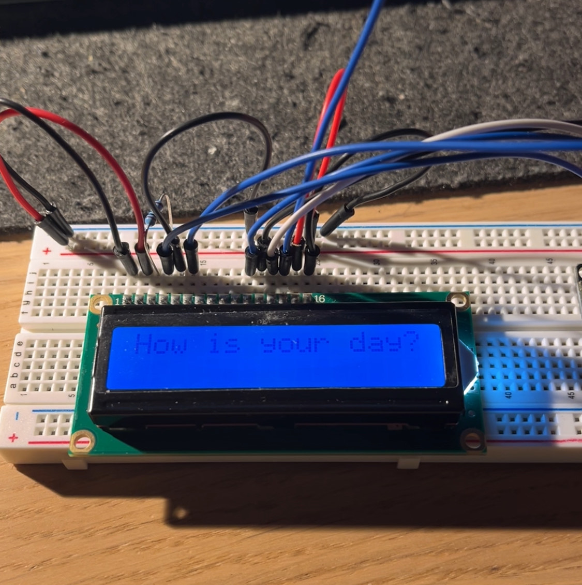
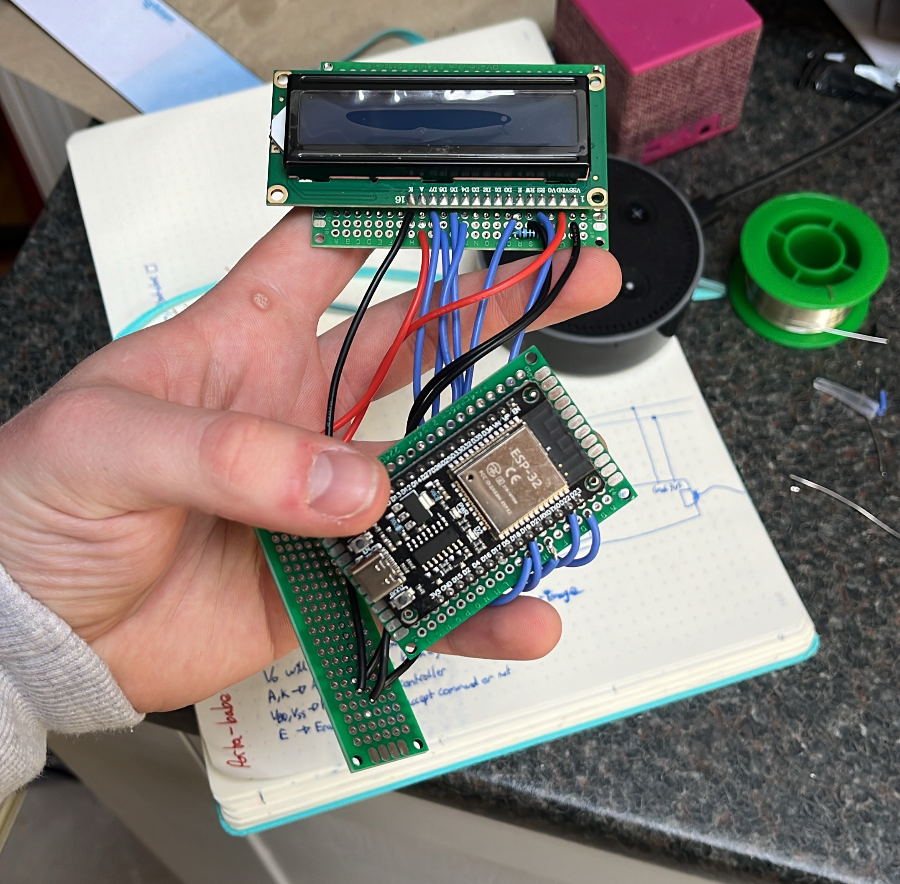
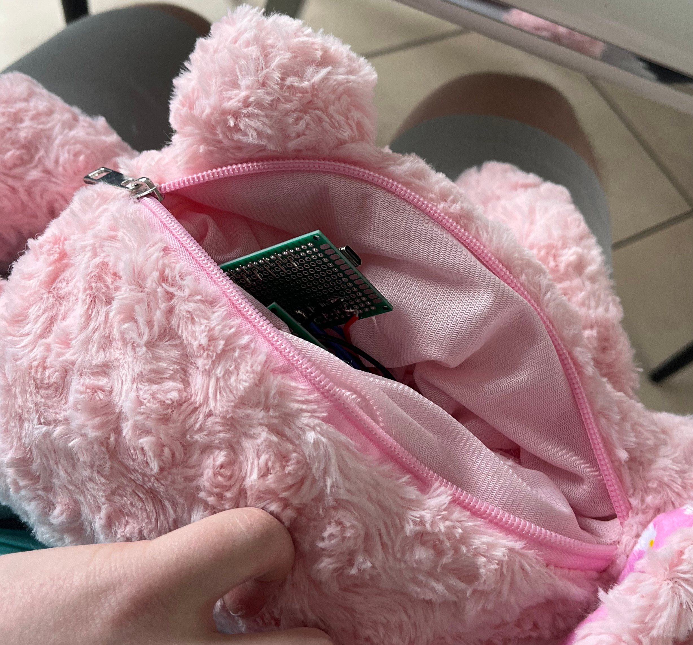
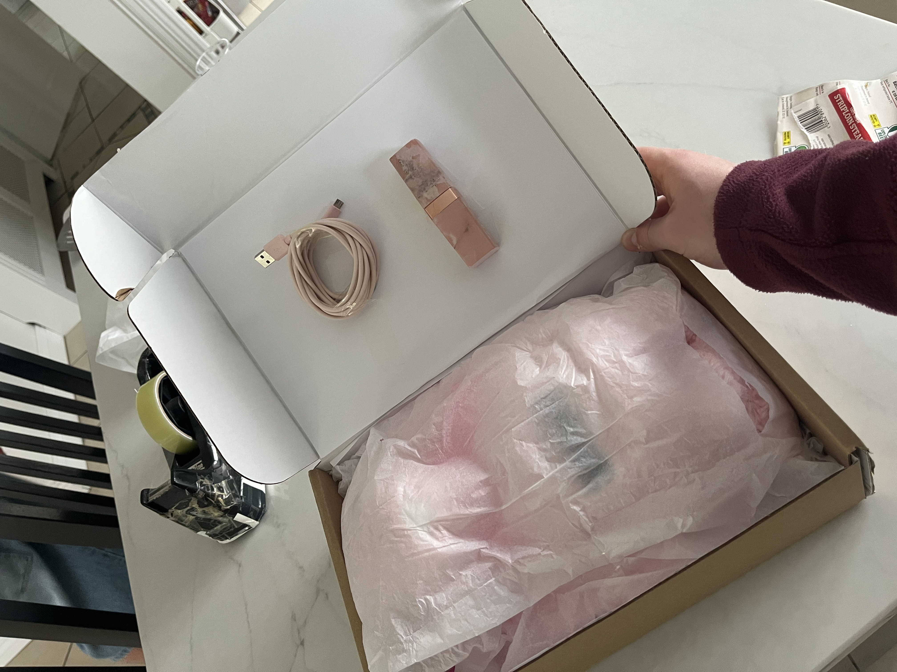

Porta-Babe was a project I started for my girlfriend as were moving away over summer. Essentially it's a teddy bear in which I can send messages to over wifi. This idea was initially just going to be a 3D printed box however, I don't own a 3D printer so I came up with the much cooler idea of making it a teddy.
First thing I did was prototype on a breadboard. I used an ESP32 and a 16x2 LCD screen that I had lying around. ESP32 was good to use because of it's wifi capabilities. After some quick programing it was all connected to firebase and displayed whatever messages I wanted... provided it fit in a 16x2 display! One of the only problems I has was how Ella would connect this to the internet when she arrived but I opted to just show her how.
Next thing I did was make the electronics more permanent. I soldered everything to some perfboard. There is 3 seperate pieces of perfboard. One for the the ESP32, one for the LCD and one for the power and ground connections. I went through the soldering process over the course of about 2 hours and thank god, it worked first time! Red wires were used for power, black for groud and blue for data.
To finish up I had to first of all find a suitable teddy and then also a way to power. I thought that in an ideal world I would simply have a zip on the back of the teddy and have a power bank inside. This would allow easy recharging and also allow Ella to easily connect the ESP32 to her laptop and eventually to the internet. What I ended up finding was a teddy that was supposed to be a backpack. Jackpot! I went and I took off all the straps and what I was left which was a teddy with a zip on the back. With a little bit of superglue and some patience I managed to get the electronics inside the teddy.
This ended up being a really fun project and I was really happy with the result. The finishing touches were to wrap it up all nicely in a box and give it to her.
